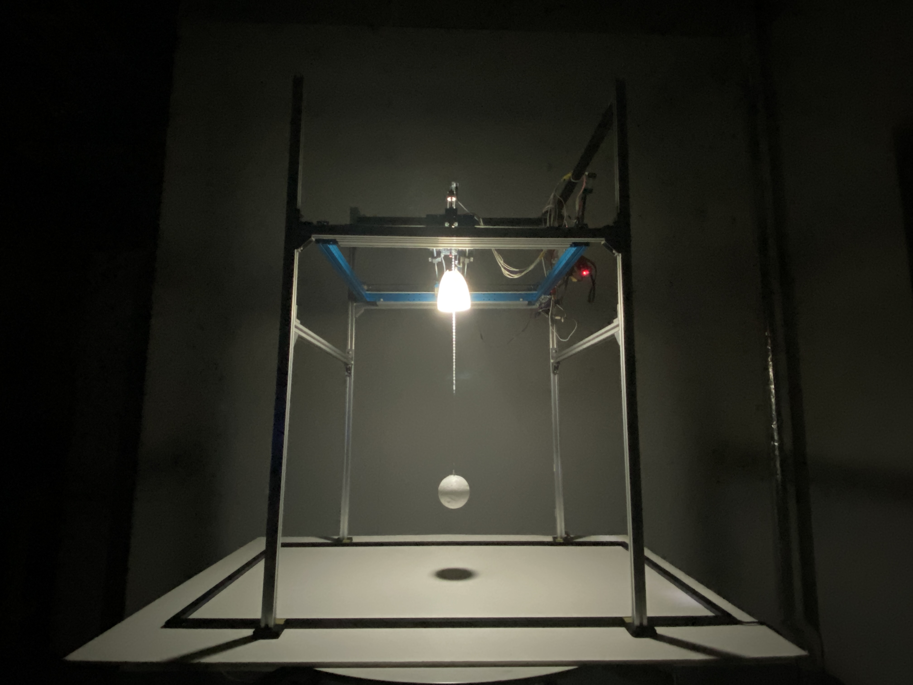
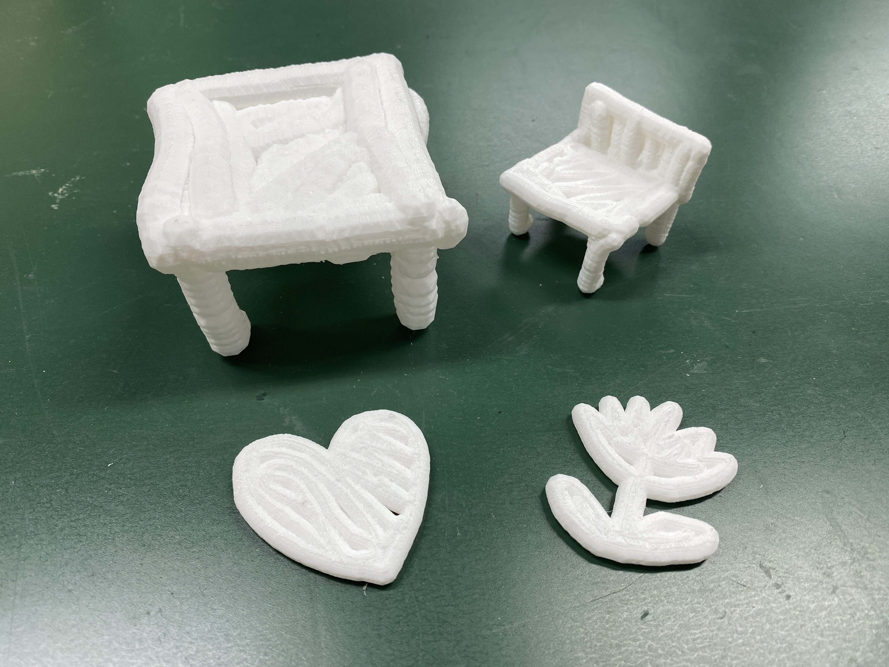
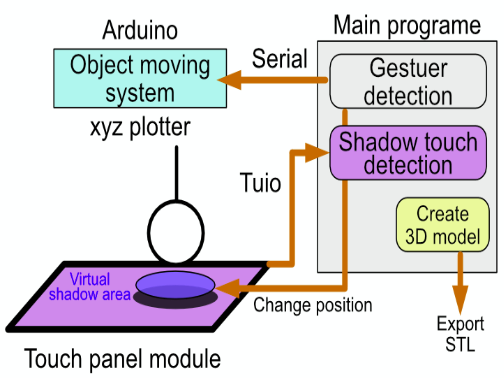

KUI Based Modeling
- 

- 
- 
We have proposed Kage User Interface(KUI) which uses the real shadow in the real world as an interface. Kage is shadow in Japanses. KUI uses gesture operations used on smartphones such as drag and pinch gestures. As a result, KUI can operate the real shadow as almost same feelings as gesture operation implemented on a touch display of smartphone. Objects and light sources are changed their position in real world by manipulating real shadows by users. Based on the result of the movements of object and light source, the position and shape of real shadow changes as well. For the concept of KUI, the shadow plays a role of two functions, one is the information display and other is the user interface. KUI applies the concept of direct manipulation of the touch display of smartphone and the cultural concept of shadows, which affects the substance by changing shadows, to the user interface. We have proposed interactive media that extend the nature of shadows as an application example of KUI. In this paper, we propose a method that enables 3D space movement of an object by performing drag, pinch-in, and pinch-out gestures on the shadow of the object, and creates 3D model based on the movement trajectory of the object.
Proceeding
KUI Based Modeling